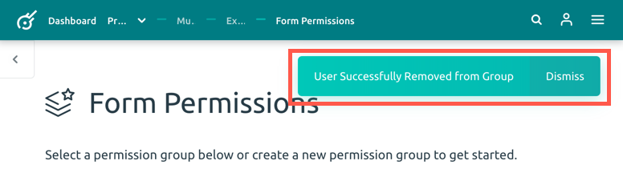

Additional Form Administrators
Form administrators are individuals that are able to modify a form, including the ability to create, edit, and delete forms and records.
Adding Form Administrators when Creating a New Form
Before you finish creating your new form, you have the option to add additional form administrators. Administrators that are already a part of your project are automatically added (including yourself).
Adding additional people will allow non-project adminstrator individuals to be able to modify this form.
-
Click on the dropdown menu option: Select Additional Form Admins. The dropdown menu will list everyone who has a Kora account.
-
Either scroll and choose the users you would like to add as form administrators, or you can type name(s)in to search the list.
- Once your additional form admins are selected, press the Create Form button at the bottom of the page.
Adding Form Administrators to an Existing Form
It is possible to add additional form administrators to an existing form. Adding adminstrators to an existing form will give them the ability
-
Go to your project and find the form you are going to add additional administrators to, and click the button Edit Form Info.
-
Scroll down on the Edit Form page until you see Need to Edit Form Permissions? and click the button to the right: Go to Form Permissions Page.

-
At the top of the Form permissions page, you will see a box that lists the Admin Group, this is where you can add user(s) as additonal form admins, giving them full access to create, edit, and delete fields and records. Click the Add User(s) to Group button.

-
A pop-up window will appear that will allow you to add user(s) to the administrator group. Click on the dropdown menu option: Select User(s) to Add to Permissions Group. The dropdown menu will list everyone who has a Kora account. You can add as many additional administrators as you need during this step.
-
Either scroll and choose the users you would like to add as form administrators, or you can type name(s) in to search the list. When you are finished, click the Add User(s) to Group button.
A pop-up window will appear on the top right of the screen notifying you that your user(s) were successfully added.
Removing Form Administrators on an Existing Form
It is possible to remove form adminstrators on an existing form. This will remove that user's ability to interact with a form.
-
Go to your project and find the form you are going to add additional administrators to, and click the button Edit Form Info.

-
Scroll down on the Edit Form page until you see "Need to Edit Form Permissions?" and click the button to the right: Go to Form Permissions Page.

-
At the top of the Form permissions page, you will see a box that lists the Admin Group. Within this box it will list names that have access to create, edit, and delete fields and records within this form. To remove a user, press the 'X' next the the name you wish to remove.
-
A pop-up window will appear asking to confirm removing the user from this group. Click the red Remove User From Group button.

A pop-up will appear on the top right corner of your screen notifying you that the user was successfully removed.

Users will not be notified when removed from being a form administrator.